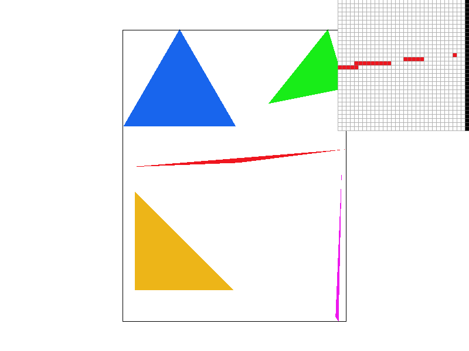
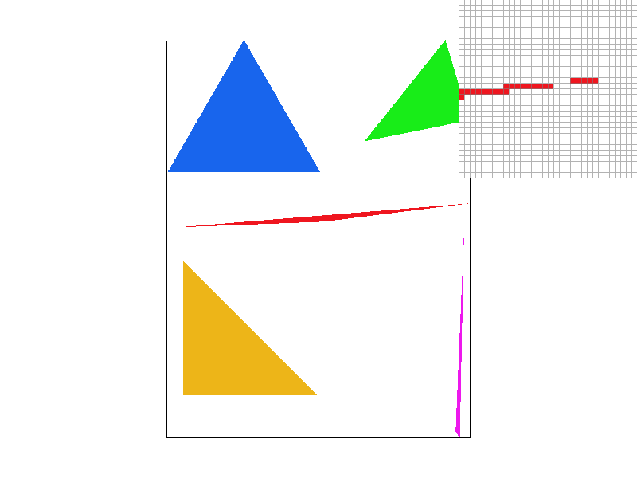
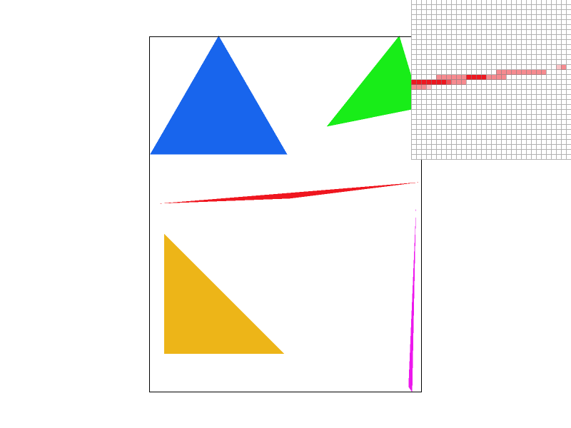
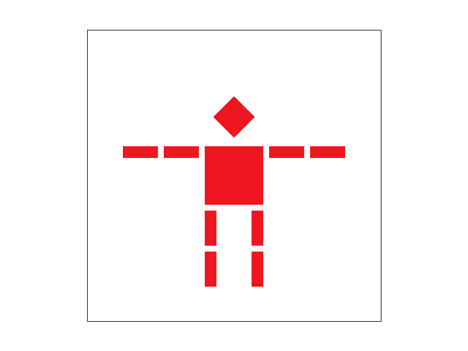
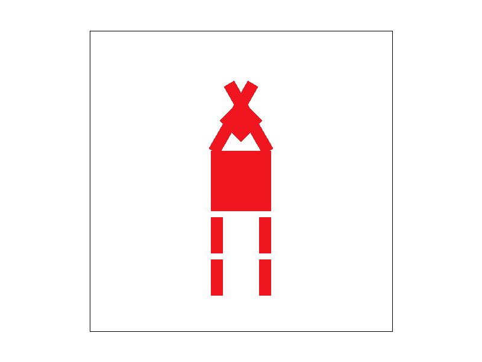
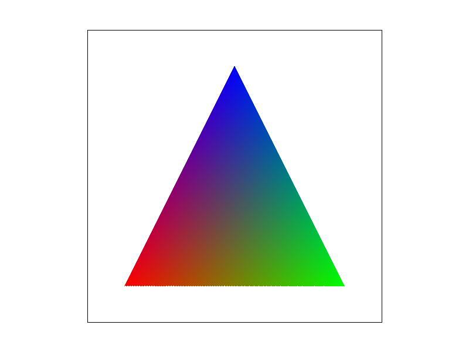
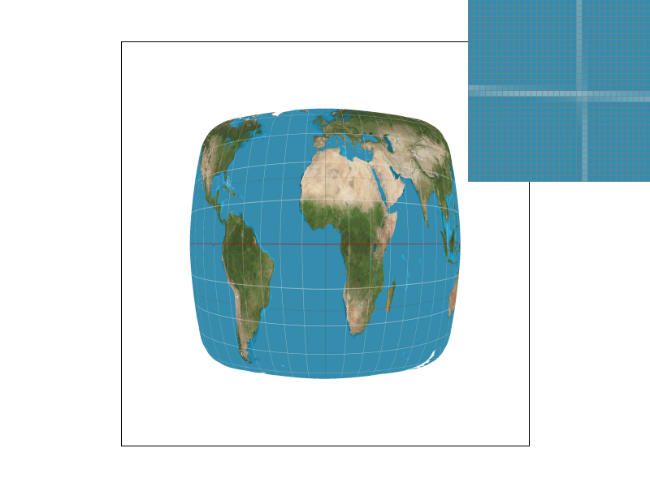
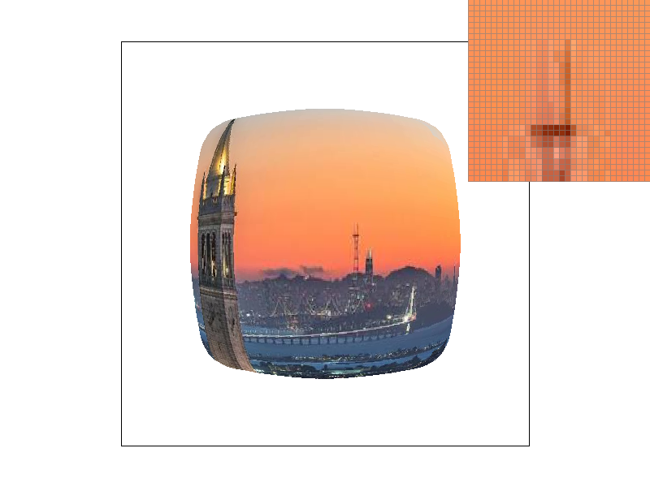
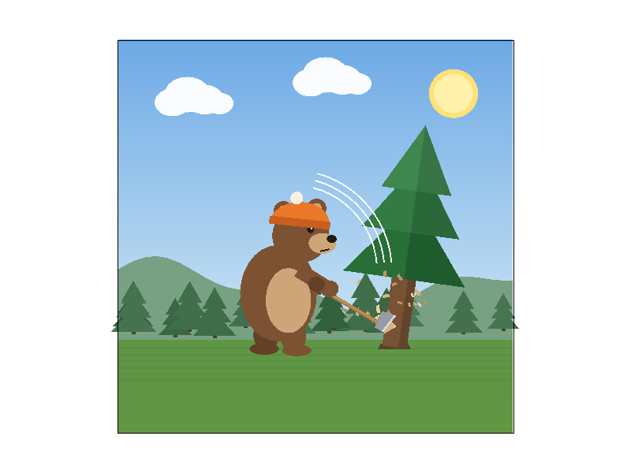

CS184/284A Fall 2026 Homework 1 Write-Up
Link to webpage: https://cal-cs184-student.github.io/hw1-og-nh-writeup/
Link to GitHub repository: https://github.com/cal-cs184-student/hw1-og-nh
Overview
I built a 2D rasterizer that turns SVG scenes into pixels. It starts with the most basic question, whether a sample point is inside a triangle, and builds up to supersampled antialiasing, hierarchical transforms, barycentric interpolation of vertex colors, and texture mapping with both pixel sampling (nearest and bilinear) and level sampling (mipmaps).
The biggest thing I learned is that almost every visual artifact here is a sampling problem. Jagged edges, broken skinny triangles, blocky magnified textures, and moiré in minified textures all come from sampling a continuous signal too sparsely or without filtering it first. Each technique in this homework trades speed or memory for a better approximation of the ideal filtered signal. I also found that barycentric coordinates are the backbone of the whole pipeline: the same area ratios give the inside test, color interpolation, uv interpolation, and the uv derivatives used to pick mipmap levels.
Task 1: Drawing Single-Color Triangles
How I rasterize triangles. For each triangle I compute its axis-aligned bounding box from the min and max of the three vertex coordinates, clamped to the screen. I loop over every pixel in that box and test one sample at the pixel center, \( (x + 0.5,\ y + 0.5) \).
The test uses three edge functions. For an edge from \(a\) to \(b\), the 2D cross product
\[ E(a, b, p) = (b_x - a_x)(p_y - a_y) - (b_y - a_y)(p_x - a_x) \]
is positive on one side of the line and negative on the other. A sample is inside the triangle when all three
edge values have the same sign. I accept both "all \( \ge 0 \)" and "all \( \le 0 \)", so the rasterizer works
for both clockwise and counter-clockwise vertex orders (test6). Using \( \ge \) rather than \( > \) means samples
exactly on an edge are drawn, so no edges are left un-rasterized. Covered pixels are written with
fill_pixel.
Why it's no worse than checking the bounding box. It is exactly the bounding-box algorithm. The loops only visit samples inside the smallest axis-aligned rectangle containing the triangle, and each sample costs a constant three edge evaluations. Samples outside the bounding box are never tested, so the work scales with the bounding-box area rather than the whole framebuffer.

Task 2: Antialiasing by Supersampling
Algorithm and data structures. Instead of one sample per pixel, I take an \( n \times n \) grid of samples inside each pixel, where \( n = \sqrt{\text{sample_rate}} \). Sample \( (i, j) \) in pixel \( (x, y) \) sits at
\[ \left( x + \frac{i + 0.5}{n},\ \ y + \frac{j + 0.5}{n} \right) \]
Every sample gets the same three edge tests as Task 1. The samples live in sample_buffer, a vector
of Color of size width × height × sample_rate, where each pixel's samples are stored
next to each other at index (y · width + x) · sample_rate + (j · n + i). This is effectively
rendering a higher-resolution image and then downsampling it.
Changes to the pipeline.
set_sample_rateandset_framebuffer_targetresize the buffer towidth × height × sample_ratewhenever the rate or window size changes.rasterize_trianglewrites each covered sub-sample directly into the buffer.fill_pixel, used by points and lines, fills every sub-sample of a pixel with the same color, so lines and points still resolve to solid pixels (for example the black border in test4).resolve_to_framebufferaverages each pixel's sub-samples and converts the float colors to 8-bit RGB for the display.
Why supersampling helps. With one sample per pixel, coverage is all-or-nothing, so edges turn into staircases and features thinner than a pixel can vanish. Supersampling estimates how much of each pixel the triangle actually covers. Averaging the samples acts as a box filter before the final downsample, which approximates removing frequencies above the pixel grid's Nyquist limit. Edge pixels become in-between blends instead of hard on/off values.
|
 |
 |
|
At rate 1 the skinny triangle tip breaks apart into isolated pixels, since most pixel centers fall outside the sliver. At rate 4 more sub-samples land inside, so the tip becomes continuous but with coarse shades. At rate 16 the tip fades smoothly into the background, because the coverage estimate is fine enough to represent how thin the triangle really is.
Task 3: Transforms
I implemented translate, scale, and rotate as 3×3 matrices in homogeneous
coordinates. A 2D point becomes \( (x, y, 1) \), which lets translation (not linear in 2D) be written as a
matrix multiply, so any chain of transforms collapses into a single matrix:
Rotation converts degrees to radians first. Because screen \(y\) points down, a positive angle appears clockwise, which matches the SVG spec.
|
 |
 |

I wanted cubeman to cross his arms over his head in an "X" pose. Each arm is rotated upward about its shoulder so the forearms cross above his head. To rotate a limb around its joint instead of the origin, I wrapped it in
translate(jx, jy) rotate(θ) translate(−jx, −jy), which moves the joint to the origin, rotates, and
moves it back. Nested <g> groups apply transforms hierarchically, so rotating an upper arm also
carries the rest of the arm with it.
Task 4: Barycentric coordinates
Barycentric coordinates \( (\alpha, \beta, \gamma) \) describe any point in a triangle as a weighted mix of its three vertices, \( p = \alpha A + \beta B + \gamma C \), with \( \alpha + \beta + \gamma = 1 \). Each weight is the area of the sub-triangle opposite that vertex divided by the whole triangle's area, so it is 1 at its own vertex and falls to 0 along the opposite edge. All three are non-negative exactly when the point is inside the triangle.
I reuse the edge function, since it equals twice a signed area:
\[ \alpha = \frac{E(B, C, p)}{E(A, B, C)}, \qquad \beta = \frac{E(C, A, p)}{E(A, B, C)}, \qquad \gamma = 1 - \alpha - \beta \]Dividing by the signed full area makes this work for either winding order. Any per-vertex value can then be interpolated smoothly; here the color at each supersample is \( \alpha c_0 + \beta c_1 + \gamma c_2 \).
|
 |

|
Task 5: "Pixel sampling" for texture mapping
Texture mapping asks: for this screen sample, what color is the texture at the matching location? For each supersample inside a textured triangle, I compute its barycentric coordinates and interpolate the vertices' \( (u, v) \) coordinates the same way as colors. Since \( (u, v) \in [0, 1]^2 \), I scale by the texture's width and height to get a continuous texel position. Pixel sampling is the choice of how to turn that continuous position into a color from the discrete texel grid.
- Nearest floors the texel position (clamped to the texture) and returns that single texel. It is one memory read, but it looks blocky when magnified and aliases when minified.
- Bilinear shifts by −0.5 to line up with texel centers, finds the 4 surrounding texels, and blends them using the fractional offsets \( s, t \): two horizontal lerps, then one vertical lerp. It costs 4 reads but gives a continuous, smooth result.
The rasterizer fills a SampleParams struct with the uv and the current psm, and
Texture::sample dispatches to the right method at mip level 0.

|
|
|
|
 |
In the pixel inspector, nearest at 1 sample per pixel shows the thin map lines on the globe as broken, jagged steps. Bilinear at 1 sample per pixel keeps them continuous with soft edges. At 16 samples per pixel the gap shrinks, because averaging many nearest samples also smooths the result, but bilinear is still slightly cleaner.
The difference is largest under magnification, when one texel spans several screen pixels: nearest produces hard square blocks, while bilinear interpolates between them. It is also large for thin, high-contrast detail like lines or text, where nearest snaps to whichever texel happens to be closest. When the texture is strongly minified, both methods alias, since many texels fall inside one pixel and neither looks at more than four of them. That is what mipmaps fix.
Task 6: "Level Sampling" with mipmaps for texture mapping
When a texture is minified, a single screen pixel covers many texels, and sampling just one or four of them aliases. A mipmap stores prefiltered copies of the texture at half, quarter, and smaller resolutions. Level sampling picks the level whose texel size best matches the pixel's footprint, so a single lookup returns an already-averaged color.
Implementation.
- In
rasterize_textured_triangle, for each sample I compute the uv at \( (x, y) \), \( (x+1, y) \), and \( (x, y+1) \) with barycentrics (extrapolating if the neighbors fall outside the triangle) and store them asp_uv,p_dx_uv, andp_dy_uv. get_leveltakes the differences to get \( (du/dx, dv/dx) \) and \( (du/dy, dv/dy) \), scales them by the full-resolution width and height so they're in texel units, and computes the level below. If \( L \le 1 \) the texture is magnified, so it returns level 0.sampleuses level 0 forL_ZERO, \( \text{round}(D) \) forL_NEAREST, and forL_LINEARit samples \( \lfloor D \rfloor \) and the next level and blends them by the fractional part of \(D\). Within each level,psmstill picks nearest or bilinear, so all six combinations work.L_LINEAR+P_LINEARis trilinear filtering.
Tradeoffs.
- Supersampling is the slowest, since cost scales linearly with the sample rate (16× the work at rate 16), and the sample buffer grows by the same factor. It has the most general antialiasing power, fixing both geometric edge aliasing and texture aliasing.
- Pixel sampling (bilinear) costs about 4 texel reads instead of 1 and uses no extra memory. It fixes blockiness under magnification but does not fix minification aliasing.
- Level sampling (mipmaps) is nearly constant cost per lookup (
L_LINEARdoubles the lookups), plus a small cost to compute the derivatives. The pyramid adds about ⅓ extra texture memory. It fixes minification aliasing cheaply, but can over-blur at steep angles because the footprint is treated as square.
Results on my own image. I used a view of the Berkeley skyline at sunset, looking past the Campanile toward the Bay Bridge and San Francisco. It has lots of fine, high-contrast detail (thin towers, bridge lights, city lights) against a smooth sky, which makes aliasing easy to spot. The pixel inspector is centered on the thin radio tower on the skyline.
|
 |
|
|
|
|
With L_ZERO + P_NEAREST, the inspector shows the thin tower as hard, blocky steps with
abrupt color jumps, and the skyline lights and bridge look speckled because each pixel grabs a single texel from
the full-resolution image. L_ZERO + P_LINEAR softens the tower's edges, but the speckle
in the city lights mostly remains, since bilinear only blends 4 neighboring texels and can't average over the
whole pixel footprint. Switching to L_NEAREST samples a prefiltered, lower-resolution level, so the
fine detail is already averaged: the tower and its crossbar become softer and lower-contrast, and the skyline
looks calmer. L_NEAREST + P_LINEAR is the smoothest of the four, at the cost of some
blur. The differences are subtle here because the image is only mildly minified in this view; zooming out further
makes the L_ZERO aliasing much more obvious.
(Optional) Task 7: Extra Credit - Draw Something Creative!


A lumberjack bear in an orange beanie, mid-swing, chopping down a big pine tree with wood chips flying. I
generated the SVG procedurally with src/gen_bear_scene.py, which writes about 380 convex polygons
(no <path> elements), so the rasterizer never has to triangulate anything tricky.
- Background: a sky gradient made from thin rects with linearly interpolated colors, a sun and clouds built from overlapping many-sided polygons, a sine-wave hill silhouette, a randomized background forest of small pines, and striped grass.
- Bear: the body, belly, head, ears, snout, eyes, and paws are ellipses approximated as polygons. The arms and axe handle are thick bars computed from two endpoints and a normal vector.
- Tree: modeled in local coordinates around its base, then rotated 8° and translated into place (the same math as my Task 3 transforms), so it leans after the chop. The cut notch shows pale wood, and randomized chips fly out of it.
- Motion: white swing arcs behind the axe, drawn as short segments along a circle around the bear's shoulder.
- Rendering at 16 samples per pixel keeps the thin swing arcs, axe handle, and chips smooth instead of broken.